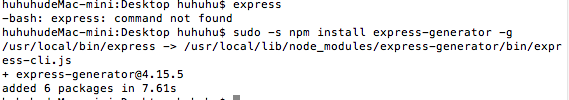

Your browser doesn't support the features required by impress.js, so you are presented with a simplified version of this presentation.
For the best experience please use the latest Chrome, Safari or Firefox browser.
第十七周工作报告
一、本周工作简介
学会如何安装和使用express
如何安装expres
第一步：安装express
1.打开终端（cmd），在终端输入命令 “ $ mkdir express”
——创建一个名为“expres”的新文件夹用于存放安装express产生的文件
2.新建文件夹后输入命令 “$ sudo npm install -g express”
——安装express的命令
安装过程如下：
express安装配置
第二步：配置express的运行环境
3.输入配置express的命令 "$ npm install express-generator -g "
配置过程中出现一个错误如下：
错误：
解决过程：
经过上网查找相关错误资料之后，发现是mac系统下用户权限无法进行全局安装配置，所以需要赋予管理员权限运行
所以更换为 “ $ sudo -s npm install express-gen ” 命令执行
安装成功！

注：在命令下方出现安装的路径以及版本信息即表示安装成功
第三步：终端输入"$ express"命令
4. 出现"destination is not empty,continue?[y/N]"的提示时，只需输入"y"后回车，表示同意继续安装

安装完成后，
尝试运行express，但出现错误
错误如下所示：

仔细查看上一步命令的代码提示发现还需输入：
“ cd . && npm install ”
为expres安装dependencies；
安装成功后，运行express输入"npm start"命令,
开始运行express:
运行后打开浏览器，进入 localhost：3000 页面，该地址为服务器默认的登入地址；

have you noticed it’s in 3D*?